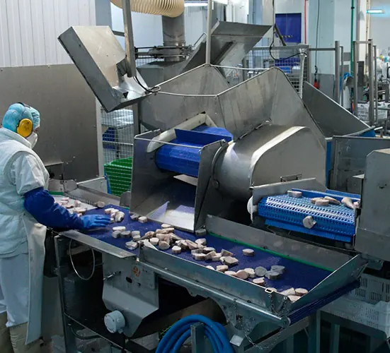
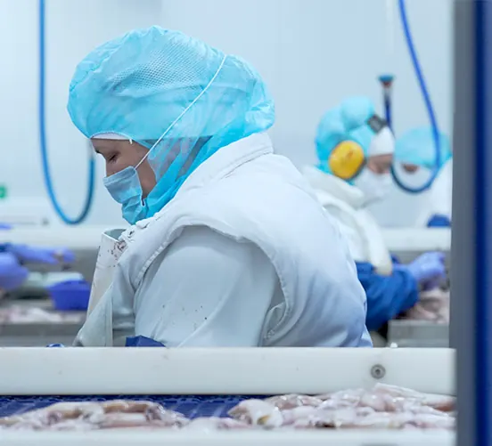
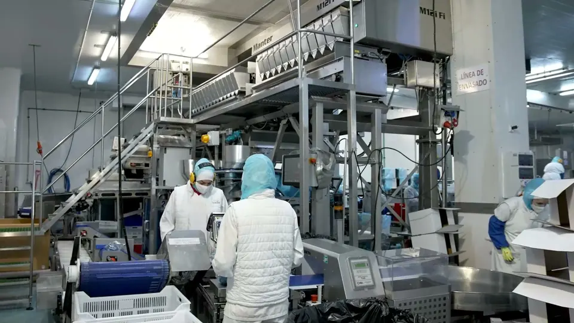
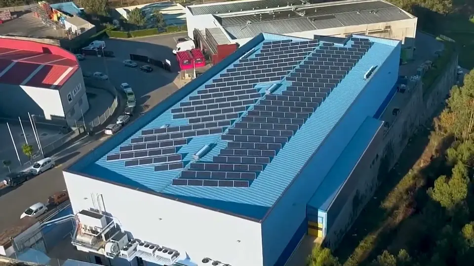

Facilities
Facilities designed for quality service
Our facilities and equipment are designed to deliver quality services that meet consumer needs and market trends.
- 2011founded
- 2plants in Pontevedra
- 3,500 m²total floor area
- 180+people on the team
- 4 t/hIQF freezing capacity
Lines and equipment
- Filleting and skinning line
- Dedicated cephalopod line
- Automatic portioning from blocks
- 2 IQF freezing tunnels and 2 drying tunnels
- Chilled rooms and cold stores
- Packing lines with multihead weigher
Numarsi on video
A tour of our facilities and our production processes.
A tour of the plant








Come and visit us
We organise plant visits for clients. Write to us to arrange a date.